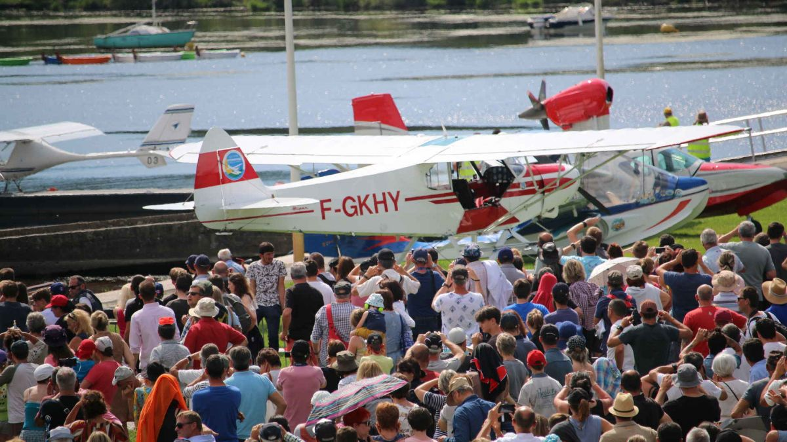

Situado en el lugar legendario de la antigua base de Latécoère, el Museo de la Hidroaviación, con el sello “Museo de Francia”,
cuenta la historia de la hidroaviación mundial. Invita a sus visitantes a adentrarse en la leyenda, la de los vuelos transatlánticos
a Nueva York durante la época dorada de la hidroaviación.